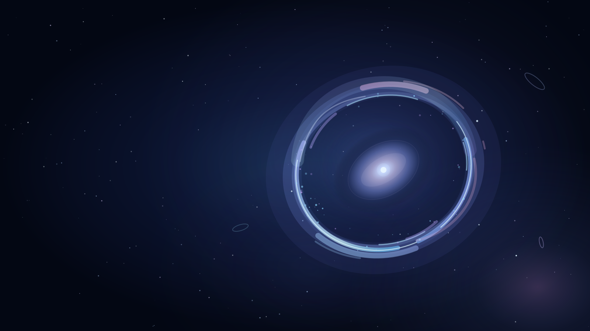

Jedna galaktyka.
Wiele obrazów.
Wyobraź sobie zdjęcie, na którym jeden odległy obiekt pojawia się w dwóch miejscach naraz. Albo układa się w świetlisty pierścień. To nie błąd aparatu. To grawitacja, która zmienia drogę światła.
NAJPIERW PRZYJRZYJ SIĘ DOWODOWI
Czy na tym zdjęciu są dwie galaktyki?
W centrum widać jasną galaktykę. Wokół niej — niemal idealny świetlisty okrąg, w którym można rozpoznać rozciągnięte struktury innego obiektu. Wygląda tak, jakby kosmos nie potrafił zdecydować, gdzie powinien umieścić ten drugi świat.
27 marca 2025 roku ESA opublikowała obraz wykonany przez Kosmiczny Teleskop Jamesa Webba. To układ, w którym galaktyka bliższa nam leży niemal dokładnie na linii widzenia do galaktyki dalszej. Światło tej drugiej dociera do teleskopu różnymi drogami, odchylonymi przez grawitację pierwszej. To, co widzimy jako łuki, należy do jednego odległego źródła. [1]
 DOWÓD OBSERWACYJNY / 2025
DOWÓD OBSERWACYJNY / 2025
Jedno zdjęcie. Dwa różne dystanse.
Jasny obiekt w centrum to bliższa galaktyka — soczewka. Okrągłe łuki pokazują rozciągnięty obraz galaktyki leżącej dalej. Obraz łączy obserwacje w świetle widzialnym i podczerwieni; kolory są opracowanym przedstawieniem danych.
ESA/Webb, NASA & CSA, G. Mahler; M. A. McDonald. Obraz: ESA/Webb — „Spying a spiral through a cosmic lens”.Soczewka nie jest zrobiona ze szkła. Nie trzeba także czarnej dziury. Wystarczy odpowiednio duże skupisko masy: gwiazda, galaktyka lub gromada galaktyk. To ona zmienia geometrię czasoprzestrzeni i w rezultacie trajektorie światła.
Najpierw zakrzywiły się pozycje gwiazd.
Historia zaczęła się znacznie wcześniej, niż powstały kosmiczne teleskopy.
Einstein przewiduje
Ogólna teoria względności opisuje grawitację jako geometrię czasoprzestrzeni. Światło biegnie po drogach wyznaczonych przez tę geometrię.
Zaćmienie staje się eksperymentem
29 maja astronomowie mierzą położenia gwiazd blisko tarczy Słońca podczas całkowitego zaćmienia. Wyniki ekspedycji do Sobral i na Wyspę Książęcą wspierają przewidywania Einsteina; późniejsze pomiary doprecyzowują ten test. [2]
Kwazar ma sobowtóra
Odkryto dwa bardzo podobne obrazy kwazara QSO 0957+561. Nie były to dwa niezależne kwazary: grawitacyjna soczewka pokazała jeden obiekt dwa razy. [3]
Pełny pierścień Webba
Dokładna geometria układu galaktyk na obrazie ESA/Webb pozwoliła zobaczyć spektakularny pierścień Einsteina i strukturę galaktyki tła. [1]
ROZWIĄZANIE BEZ SZTUCIKÓW
To nie galaktyka się wygina. Wygina się jej obraz.
Gdy światło dalekiego obiektu przechodzi obok dużej masy, jego droga zmienia kierunek. Do obserwatora mogą dotrzeć promienie biegnące po różnych stronach soczewki. Teleskop interpretuje ich kierunki jako różne pozorne położenia tego samego źródła.
Kiedy źródło, soczewka i obserwator układają się niemal w jednej linii, obrazy wydłużają się w łuki. Przy idealnej osiowej symetrii pojawia się pierścień Einsteina. Jeśli przesuniemy źródło, pierścień może rozdzielić się na dwa obrazy albo zakrzywione fragmenty. [4]
Soczewkowanie nie przesuwa galaktyki w przestrzeni. Zmienia drogę, którą jej światło dociera do naszych oczu.
Jest w tym coś jeszcze bardziej niezwykłego
Gdy grawitacja zmienia bieg promieni, może również zwiększyć jasność obserwowanego źródła. Ogromne galaktyki bywają więc naturalnymi teleskopami, przez które badamy jeszcze odleglejszy Wszechświat. Ale taki kosmiczny obiektyw zniekształca obraz: jego powiększenie i deformacje zależą od rozkładu masy, geometrii oraz położenia obserwowanego obiektu.
Sama nazwa „soczewka” jest użytecznym porównaniem. Szkło załamuje światło dzięki własnościom materiału, a soczewka grawitacyjna odchyla je w zakrzywionej czasoprzestrzeni.
Skoro grawitacja potrafi
powielić obraz…
…czy z samych zniekształceń można odtworzyć masę obiektu, który je spowodował?
SOCZEWKA JAKO WAGA KOSMICZNA
Światło opowiada również o niewidzialnej materii.
Soczewkowanie zależy od całkowitego wpływu grawitacyjnego materii — nie tylko tej, która świeci. Analizując kształty łuków i położenia wielu obrazów, astronomowie mogą szacować, jak rozłożona jest masa w galaktyce lub gromadzie. Także ta przypisywana ciemnej materii. Nie oznacza to, że sam pojedynczy łuk daje jednoznaczną mapę całej masy; potrzebne są modele i dodatkowe obserwacje. [5]
Obrazy, których położenia i kształty zmieniła grawitacja.
Również składnik niewidoczny bezpośrednio w obrazach optycznych.
To dlatego soczewkowanie grawitacyjne jest czymś więcej niż efektowną ciekawostką. Zjawisko pozwala testować modele grawitacji, wykrywać rozkład masy i zaglądać do bardzo odległych galaktyk. Nawet niepozorne wygięcie kształtu na zdjęciu teleskopowym potrafi stać się informacją naukową.
TY JESTEŚ TERAZ ASTRONOMEM
Przesuń galaktykę. Zmień obraz nieba.
Nasze laboratorium zaczyna się od sytuacji, w której obiekt tła jest idealnie ustawiony za soczewką. Masz do dyspozycji masę, odległości i położenie źródła. Sprawdź trzy scenariusze:
Ustaw wszystko w jednej linii
Wybierz „Pierścień Einsteina”. Sprawdź, co wyznacza jego rozmiar. Zwiększ masę soczewki — co dzieje się z promieniem?
Zburz idealną symetrię
Wybierz „Dwa obrazy i łuki”. Przesuwaj pozycję X oraz Y. Obserwuj, jak zmieniają się dwa obrazy jednego źródła.
Prześledź powiększenie
Uruchom „Przelot źródła”. Porównaj zmiany obrazu i krzywej powiększenia. Czy maksimum przypada blisko osi soczewki?
Uczciwe ograniczenie: w etapie 31 używamy cienkiej soczewki punktowej i umownie euklidesowych odległości. Rzeczywista galaktyka ma rozłożoną masę, a w kosmologii odległości kątowe nie sprowadzają się zwykle do prostego odejmowania Dₛ − Dₗ. Symulator pokazuje zasadę, nie rekonstruuje konkretnego zdjęcia z Webba.